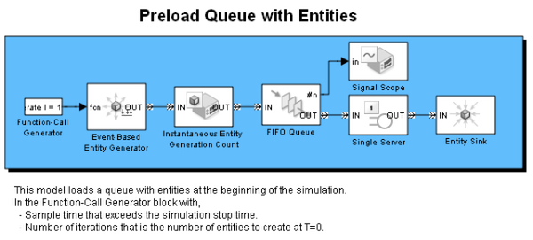

Preload Queue with Entities
Contents
Overview
This model loads a queue with entities at the beginning of the simulation.
Structure
In the Function-Call Generator block, to load the queue with entities the function call block has the following:
- Sample time exceeds the simulation stop time.
- Number of iterations is the number of entities to create at T=0.